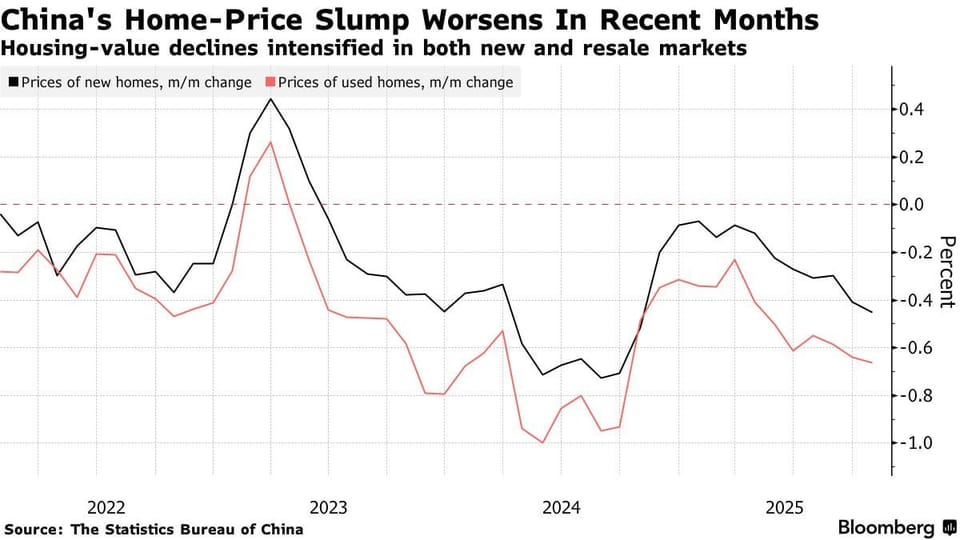

世界苦茶11月21日新闻 | 36条 | 美国对台关键法案通过

美国对台关键法案通过 | 锡安教会成员被批捕 | 有20项中日相关活动延期或取消 | 中国对美稀土出口升至9个月以来高点
苦茶数据
美元兑人民币：7.11（昨日7.11，前日7.11）
美元兑日元：157.09（昨日157.87，前日155.52）
上证指数：3834（昨日3931，前日3942)
标普500指数：6538（昨日6763，前日6617）
比特币：85423（昨日90707，前日92581）
布伦特原油：62.52（昨日64.04，前日64.61）
中国新闻
• 胡耀邦110岁冥诞 习近平重申反腐治党理念。
中共总书记习近平星期四发表纪念已故领导人胡耀邦诞辰110周年讲话，呼吁中共党员向他学习，保持正气、以身作则，抵制不正之风和腐败现象等。受访学者分析，这明显是藉由纪念胡耀邦，来传达现任领导人要强调的治党理念。星期四是中共前总书记胡耀邦110周年冥诞，中共中央当天上午在北京人民大会堂举行座谈会。据新华社发布的讲稿，习近平在会上首先回顾了胡耀邦的生平和贡献，并评价他是“久经考验的忠诚的共产主义战士，伟大的无产阶级革命家、政治家，我军杰出的政治工作者，长期担任党的重要领导职务的卓越领导人，为民族独立和解放、社会主义革命和建设、改革开放和社会主义现代化建设建立了不朽功勋”。（翻評：胡耀邦的引申是反腐…這也是想象力夠強。）
• 中国远洋测量船和美军在北太平洋活动日益频繁。
非政府、非盈利组织收集的资料显示，美国上月在西北太平洋加强军事演习之际，五艘中国远洋测量船，包括用于航天和导弹追踪及水下测绘的船只，也在该海域活动。总部位于关岛的太平洋岛屿安全中心指出，北太平洋地区快速军事化尚未引起足够重视，并强调任何大国冲突，都可能导致岛屿居民成为潜在目标。该中心负责人贝蒂斯在接受采访时说：“从美国参与的双边和多边演习数量来看，相关活动相当频繁。” 贝蒂斯认为，中国派遣远洋测量船进入该海域测绘实际的水下作战空间，并不让人意外。PCIS星期四发布的监测报告显示，过去一个月内，三艘中国远洋测量船，包括可追踪导弹的“远望7号”，出现在太平洋小岛国基里巴斯附近海域。
• 中国顶级造舰研究所的首席科学家被拘留。
据当地媒体报道，中国一家在海军研发展领域发挥重要作用的大学的首席科学家因涉嫌学术不端和挪用国家科研经费被拘留调查。江苏科技大学周二证实，郭威一案正在调查中，并称已因上述指控终止其学术合同。该校1953年创办，是响应毛泽东发展强大海军的号召而设立的，是中华人民共和国首家专业培养造船技术人才的院校。郭威所在的材料科学与工程学院参与了多项重大项目，包括中国首个自主设计并综合研制的载人潜水器“蛟龙号”，以及中国的月球探测工程等。
• 生育繁荣还是萧条：携程联合创始人发起5亿港元基金以提升出生率。
携程集团联合创始人梁建章表示，香港在应对中国即将到来的人口危机方面具有独特优势 携程集团联合创始人梁建章在香港设立了一家规模为5亿港元的基金会，以应对中国日益严重的生育危机。他指出，作为一个促进国际经验交流的全球枢纽，香港具备独特优势，是应对中国不断加剧的人口压力的理想跳板。“香港社会面临的低生育率挑战具有高度代表性，基金会的试点为内地一线城市及其他类似亚洲大都会提供了有价值的参考，”他在书面回复中对《南华早报》表示。该基金会以梁个人名义成立。
• 中国打压升级 锡安教会18人遭正式批捕。
2025年11月20日中国锡安教会创办人金明日等18位教会成员上个月被警察刑事拘留，本周遭检方正式批准逮捕。人权团体指出，这显示中国政府对非官方的地下教会镇压升级。中国地下基督教会“锡安教会”今年10月遭中国政府大规模抓捕；周三，关注中国宗教自由的非营利人权组织“对华援助协会”创始人傅希秋在X平台证实，有18位锡安教会领袖周二被广西省北海市检察院正式批准逮捕。这意味着他们最终将面临审判，可能被判处最高3年的刑期。
• 日方调查：约20项在华日本相关活动延期或取消。
在中国，日本相关活动被延期或取消的情况正在扩大。日本贸易振兴机构截至11月19日汇总的情况显示，延期或取消的活动已经达到约20项。围绕日本首相高市早苗针对「台湾有事」的国会答辩，中国政府连日来不断批评日本，中国的地方政府及企业似乎在部分情况下开始回避与日资企业等接触。原定于11月19日在江苏省举办的中日间的贸易促进活动，以及原定于22日起由日本非营利组织「言论NPO」与中方在北京共同举办的活动均已确定延期。有的活动虽然按原计划举办，但中方取消参与的动向也在扩大。
• 中国官媒在与日本争端之际呼吁开展琉球历史研究。
中国官媒呼吁加大对琉球历史研究以应对与日本的争论 周三，官方媒体《环球时报》在社评中呼吁对琉球群岛开展更多研究，认为这是一个远超学术范畴的重要问题。“琉球群岛的地缘位置、战略选择及未来走向，不仅决定其自身命运，也深刻影响周边国家和地区的安全关切，”社评写道。琉球群岛位于九州与台湾之间，曾由独立的琉球王国统治。该群岛包括冲绳，那里驻有数万美军，是美国境外规模最大的军力部署之一。
• 天空新闻报道，英国首相基尔·斯塔默将于一月访华。
英国首相基尔·斯塔默将于一月底访华，天空新闻周四报道。这将是英国领导人七年来首次访问中国。斯塔默领导的工党政府把改善与北京的关系列为优先事项，寻求外国投资以兑现竞选承诺、改善基础设施并推动英国经济增长。但两国关系并不顺畅，双方曾互相指责从事间谍活动。首相办公室在被问及斯塔默可能的访华行程时表示，会像往常一样公布任何出行计划。中国大使馆尚未就此置评。如果一月底成行，此次访问将发生在英国预计数周后就是否批准位于伦敦的新中国大使馆作出决定之际，批评者称该大使馆将构成安全风险。本周，英国安全局向议员发出新警告，称中国特工正试图收集情报并进行影响活动。
印太新闻
• 美国对台三举措 学者判断强化高市拒撤言论立场。
中日因台湾议题僵持不下，美国总统特朗普就日本首相高市早苗发表的“台湾有事”论至今未正式公开表态。美国参议院星期二则无异议通过《台湾保证落实法案》，美国国防部也在一周内宣布两笔对台军售。美国上述对台三举措，都发生在高市早苗11月7日发表“台湾有事”言论之后的敏感时期。尽管北京坚持高市必须撤回言论，受访学者评估，美国对台举措可能强化高市拒撤言论立场。另有学者分析认为，美国对台军事支持没有动摇；特朗普至今未对高市言论公开表态，因为他评估目前中日发生武装冲突的可能性不大。美国参议院星期二通过跨党派《台湾保证落实法案》，要求国务院每两年审查一次与台湾交往的相关规范，并提出计划。
• 美参议院通过可能扩大与台湾官方交流的法案。
美国参议院通过一项可能为与台湾更多官方交流扫清道路的法案 如果唐纳德·特朗普签署，该立法将要求国务院审查限制与台北关系的指南 四十多年来，美国自身的指南限制了官员与台湾同行的互动。但《台湾保证实施法》要求国务院“识别机会并制定计划，解除对与台湾关系的自我限制”。该立法于周二晚间在两党参议员无异议通过——尚未由总统唐纳德·特朗普签署成为法律——可能为台北与华盛顿之间更高层次的交流铺平道路。它也可能开启台湾高级官员访问美国首都的可能性，此前北京长期反对此类访问。即便美中两国稳定双边关系的前景有所增加，台湾问题仍是北京与华盛顿之间的主要冲突点。
• 欧洲寻求与因美中竞争受创的印太国家达成共同立场。
来自亚洲、非洲和太平洋的高级官员和外交官将出席在布鲁塞尔举行的论坛。北京和华盛顿未获邀请。周四，数十位来自亚洲、非洲和太平洋各地的高级官员和外交官将抵达布鲁塞尔，欧盟试图说服他们，欧盟比美国和中国更值得信赖。欧盟官员表示，超过70个代表团将出席该集团第四届印太论坛，预计周五将有50多位部长或副部长参加会谈。关键是，北京和华盛顿均未获邀请。一位参与筹划的官员表示：“没有邀请特别嘉宾——这只面向我们的印太合作伙伴。这是一次与他们展开开放，坦诚讨论的机会。
• 菲律宾女市长被指中国国籍 伪造身份并运作诈骗园。
2025年11月20日菲律宾执法部门称，原班班市女市长Alice Guo实为中国公民，原名郭华萍。她被指控运作一个诈骗园，因贩卖人口罪如今被判终身监禁。周四，一家菲律宾法院判处Alice Guo等另外七人终身监禁，他们受到贩卖人口的指控。执法部门认定，Alice Guo是中国公民，原名郭华萍，后伪造菲律宾人身份，并当选一名市长。她还受到指控运营一家网络赌博中心，有数百人在那里被迫从事诈骗活动。据法新社报道，这座网络赌博中心有办公楼、豪华别墅以及一座大型的游泳池。一名越南工作人员逃脱报警后，警方于2024年3月进行了突击搜查。
• 缅甸政府再次突袭诈骗园区 拘捕数百人。
缅甸政府再次突袭诈骗园区 拘捕数百人 2025年11月20日缅甸军政府扩大打击网络诈骗活动的行动。据缅甸官方媒体报道，军方突袭了缅泰边境妙瓦底地区又一处园区，拘留了数百名外国人。缅甸军方周三称，他们突袭了位于泰缅边境的一个网络诈骗中心，逮捕346人，查获了近万部手机。军方发言人佐敏吞少将在发表于《缅甸日报》和其他官方报纸的声明中表示，缅甸军方星期二突袭了妙瓦底的水沟谷的一个诈骗园区。他说，当局拘留了346名外国人，并没收了近1万部手机及其他相关设备，同时阻止了试图越境逃跑的人。
科技新闻
• 西班牙法院裁定Meta须向多家媒体支付近5亿欧元赔偿。
西班牙传统媒体在与社交巨头Meta的诉讼中取得胜诉：马德里一家法院周四裁定，Meta需向新闻媒体支付近5亿欧元的赔偿金。法院声明称，马德里第15商业法庭认定马克·扎克伯格的社交媒体巨头通过提取互联网用户的个人数据，违反欧洲法律并将其用于更有效的广告，行使了不正当的市场优势。Instagram 和 Facebook 的母公司将需向将案件诉至法庭的81家西班牙媒体支付4.81亿欧元的赔偿金。法庭在声明中写道：“对如此大量个人数据的非法处理使Meta获得了西班牙在线媒体无法匹敌的优势。Meta的行为损害了西班牙数字媒体的在线广告收入。
• 硅谷反华情绪高涨，但美国人工智能发展仍靠中国人才推动。
6月，Meta首席执行官马克·扎克伯格公布该公司的超级智能实验室时，列出了11位加入这一雄心勃勃计划的人工智能研究员，他们的目标是打造一台比人类大脑更强大的机器。这11人全部是在其他国家接受教育的移民。据《纽约时报》看到的一份备忘录显示，其中七人出生于中国。尽管数月来许多美国企业高管、政府官员和专家一直将中国描绘成阻碍美国人工智能快速发展的敌人，但美国众多突破性研究的背后都由中国人才推动。两项新研究表明，多年来，在中国出生并接受教育的研究人员一直在美国顶尖人工智能实验室扮演重要角色。
• 谷歌发布图像生成模型 Nano Banana Pro。
谷歌对其图像生成模型发布了升级版Nano Banana Pro，这款新模型基于谷歌本周早些时候发布的最新大型语言模型 Gemini 3。Nano Banana Pro 相较于其前代产品 Nano Banana 有所改进，能够生成更精细的图像和更精确的文本，新增了编辑功能以及网络搜索功能。Nano Banana Pro 旨在为专业人士提供更强大的图像控制功能，用户可以控制拍摄角度、场景光照、景深、对焦和色彩分级等参数。这款新模型可以使用六张高保真照片，或者在一张图片中融合多达 14 个物体，还能保持最多五个人的一致性和相似度。
• iPhone用户现在可以隔空投送文件到安卓。
当地时间周四，谷歌公司宣布了一项新的跨平台功能，允许iPhone和安卓用户之间共享文件。iPhone上的隔空投送和 Pixel 10 设备上的快速分享共同构成了这项全新的文件传输功能。文件共享选项适用于包括 iPhone、iPad 和 Mac 在内的苹果设备以及Pixel 10系列。据谷歌介绍，苹果设备用户需要将其隔空投送可见性更改为 “所有人，10分钟”才能接受来自 Pixel 10 设备的文件传输。启用该设置后，来自安卓用户的文件看起来与来自iPhone用户的隔空投送文件相同，具有相同的通知和点击接受选项。为了接收来自苹果用户的文件，Pixel 10 用户需要打开“所有人 (10分钟内)”设置或在快速分享页面上进入接收模式。文件保存在“文件”应用中。
经济新闻
• 中国10月对美稀土出口升至九个月来最高水平。
中美两国元首达成暂停贸易战的协议后，中国10月对美国的稀土出口量环比大增56%，升至今年1月以来的最高水平。中国海关总署星期四公布的数据显示，中国10月稀土磁铁出口量较上月下降5.2%至5473吨，这是连续第二个月下降。中国对美国的稀土出口则攀升至九个月以来的最高，美国占中国10月稀土出口总量的12%，成为仅次于德国的第二大中国稀土买家，紧随其后的分别是韩国、越南和印度。不过，和上年同期相比，中国今年1至10月份对美国的稀土出口总额仍下降了20%以上。
• 荷兰暂停部长令但法庭裁决仍生效 闻泰科技称对安世控制权受限。
荷兰政府宣布暂停接管安世半导体的行政命令后，安世的中资母公司闻泰科技称，公司对安世控制权目前仍然受限。据《每日经济新闻》报道，闻泰科技星期三晚公告称，虽然荷兰经济事务部当天宣布暂停对安世所下达的部长令，但企业法庭裁决依旧处于生效状态，即闻泰科技创始人张学政在安世的职务仍未恢复，及安世的99%股权仍交由独立第三方托管，并未受暂停的部长令任何影响。荷兰政府9月30日以国家安全为由强制接管安世，其后安世向荷兰企业法庭提交紧急请求，启动对公司调查与采取临时措施。
• 特朗普政府宣布计划在加利福尼亚和佛罗里达海岸外进行新的海上石油钻探。
特朗普政府周四宣布将几十年来首次在加利福尼亚和佛罗里达海岸外进行新的石油钻探，推进这一项目。批评者称此举可能损害沿海社区和生态系统，而总统唐纳德·特朗普则寻求扩大美国石油产量。石油行业一直寻求进入包括南加州和佛罗里达海岸在内的新近海区域，以提升美国能源安全和创造就业机会。联邦政府自1995年以来一直未允许在墨西哥湾东部联邦水域钻探，该海域包括佛罗里达近海和阿拉巴马近海的一部分，原因是担心石油泄漏。加州有一些近海钻井平台，但自上世纪80年代中期以来在联邦水域未有过新租赁。自1月第二次就职以来，特朗普系统性地扭转了前总统乔·拜登以减缓气候变化为重点的政策。
• 美国9月新增就业岗位，但失业率上升。
根据最新公布的数据，美国经济在9月新增119，000个就业岗位。相比8月这是一大幅反弹，但失业率仍然上升。
俄乌战争
• 特朗普施压泽连斯基在领土、军队规模和武器等方面全面让步以结束战争。
据金融时报报道，乌克兰官员表示，乌克兰正面临特朗普政府的巨大压力，美国敦促泽连斯基尽快接受美俄拟定的和平计划，以结束乌克兰战争。这些官员及一名了解情况的人士表示，美国的做法类似于今年早些时候强硬要求总统泽连斯基接受一项关于矿产资源权的苛刻协议。这份由特朗普星期四支持的、由美俄谈判代表起草的28点和平计划，要求基辅做出重大让步，已经越过乌克兰一直坚持的底线。乌克兰官员透露，特朗普政府已经告诉泽连斯基及其团队，白宫正在按照“激进”的时间表推动提案，以期在年底前结束战争。美国官员希望泽连斯基能在下周四感恩节前签署协议，计划本月晚些时候在莫斯科公布和平协议，并在12月初完成整个进程。
• 欧洲对特朗普说：你关于乌克兰的和平方案根本算不上方案。
欧洲与乌克兰官员已拒绝唐纳德·特朗普最新提出的偏袒莫斯科的不平等和平方案，警告称向俄罗斯妥协只会促使弗拉基米尔·普京下一步攻击北约。欧盟首席外交官卡娅·卡拉斯告诉美国总统的团队，他们提出的28点停火蓝图如果没有基辅和欧洲各国政府的支持就无法成功，而这些国家现在是对乌克兰战争行动最大的资助者。美国的提议在欧洲首都引发了警觉，部分原因是它们在起草过程中被完全排除在外，更多原因是，在一位官员看来，这无非是普京的愿望清单。
• 乌克兰北部的要塞城市切尔尼戈夫正为最坏情况的冬季做准备。
乌克兰北部要塞城市切尔尼戈夫为最坏情况的冬天做准备 当地居民在切尔尼戈夫市中心停电时行走，照片摄于2025年10月10日。夜幕降临时，位于乌克兰北部的切尔尼戈夫陷入黑暗，只有发电机的噪音打破寂静。它们持续的嗡嗡声如今如此常见，有时甚至掩盖了俄罗斯无人机划过夜空的声音。但在切尔尼戈夫博布罗维察区居住了26年的纳塔利娅·斯维里登科仍能立刻辨认出那声响。“你心里那种感觉无法形容。你不知道它是会从头顶掠过，还是会落到你家上面。非常可怕，非常难受，而且让人深深悲伤，”她对基辅独立报说。今年秋天，俄罗斯重新发动了针对乌克兰能源基础设施的攻势。
• 乌克兰青少年破坏分子通过Telegram被招募，去袭击自己的国家。
乌克兰少年破坏者在电报群被招募去袭击自己的国家 今年七月，一名17岁的少年从乌克兰东部家乡出发，跋涉500英里到西部城市里夫内的一处公园，取走藏在那里的炸弹和一部手机。他说有人答应给他2000美元，让他把炸弹安放在乌克兰征兵部门使用的一辆面包车里。“当我在接线时，我想它可能会爆炸。我想我可能会死，”他告诉BBC。为了保护匿名，他的名字被改为弗拉德。乌克兰政府称，弗拉德是数百名儿童和青少年之一，这些人在网上被俄罗斯招募，并被许诺报酬以实施对自己国家的破坏和其他袭击。他说有人告诉他把手机设置为直播，将画面传给指挥者，这样当有人进入车内时对方就能远程引爆装置。
• 特朗普特使凯洛格将离开白宫，令乌克兰在危机时刻失去一位关键的美国支持者。
白宫于11月19日证实，美国总统唐纳德·特朗普的乌克兰特使基思·凯洛格将于1月离职。凯洛格的离开将在关键时刻使乌克兰失去其在特朗普白宫的主要拥护者——此时乌克兰正面临俄方攻击升级、战场形势恶化及国内腐败危机。路透社11月19日援引四名要求匿名的消息人士最初报道称，凯洛格曾对同僚表示，1月将是其担任特使的自然终点，因为该职通常需要参议院在360天后给予批准。一名消息人士称，凯洛格从未打算在特朗普政府长期任职。目前尚不清楚是否会有人接替凯洛格以及会由谁出任。一位白宫官员在对基辅独立报的评论中证实了凯洛格将于1月离任。凯洛格最初被任命为兼管乌克兰与俄罗斯事务的特使。
世界新闻
• 巴西总统任命其盟友若热·梅西亚斯为该国最高法院大法官。
巴西总统路易斯·伊纳西奥·卢拉·达席尔瓦周四任命现任代理检察长豪尔赫·梅西亚斯为该国最高法院大法官。梅西亚斯是卢拉本届任期内对最高法院的第三位提名人选。该任命现将提交参议院表决。如获确认，梅西亚斯将填补前大法官路易斯·罗伯托·巴罗索于十月退休后留下的席位，巴罗索提前八年离退休龄。“我确信梅西亚斯将继续像他在整个公共生涯中所做的那样，在最高法院捍卫宪法和法治，因此我提出这一推荐，”卢拉在Instagram上写道。现年45岁的梅西亚斯在被任命为代理检察长之前，曾在联邦政府多个部门任职。他被认为是卢拉及其继任者。
• 欧盟的卡拉斯宣布因苏丹民兵团体的暴行而实施制裁。
欧盟最高外交官卡娅·卡拉斯周四代表欧盟发表严厉声明，谴责苏丹快速支援部队准军事组织在夺取苏丹城市埃尔法舍尔后持续犯下的暴行。卡拉斯指出，“有意针对平民、基于族裔的杀害、系统性的性别及性暴力、饥饿”以及阻断人道援助等，均违反国际法。“此类行为可能构成战争罪和危害人类罪，”她说。她随即宣布对快速支援部队副首领阿卜杜勒拉希姆·哈姆丹·达加洛实施制裁，并表示欧盟已准备针对其他破坏苏丹稳定的行为者采取制裁行动。卡拉斯还呼吁各方重启停火谈判，确保人道通道并为平民提供安全通行。
• 特朗普称民主党议员的视频是“煽动叛乱的行为，应处以死刑”。
白宫谴责民主党议员视频但对特朗普帖文有所回避 白宫新闻秘书卡罗琳·利维特周四表示，尽管特朗普当天早些时候在社交媒体上的发文如此，但总统实际上并不想看到国会议员被处决，她称一些议员发布的视频是“煽动性行为，应处以死刑！” 特朗普在其平台Truth Social上发布了两条帖子，回应由科罗拉多州民主党众议员杰森·克劳，宾夕法尼亚州民主党众议员克里斯·德卢西奥，北新罕布什尔州民主党众议员玛吉·古德兰德，宾夕法尼亚州民主党众议员克里西·霍拉汉，以及亚利桑那州民主党参议员马克·凯利和密歇根州民主党参议员埃莉萨·斯洛特金发布的一段视频。
• 西班牙总检察长在一宗备受争议的泄密案中被判有罪。
西班牙检察长在一桩备受争议的泄密案中被定罪并被迫辞职 西班牙检察长阿尔瓦罗·加西亚·奥尔蒂斯在一起引发强烈争议的案件中被认定泄露机密信息，不得不辞去职务，此案加剧了该国的政治分裂。最高法院认定加西亚·奥尔蒂斯非法泄露了商人阿尔贝托·冈萨雷斯·阿马多尔的税务情况细节，后者是某位资深保守派政客的男友。法院对他处以两年不得担任该职务的禁令，并罚款7200欧元。同时他还须向冈萨雷斯·阿马多尔支付1万欧元的赔偿。加西亚·奥尔蒂斯的审判加剧了首相佩德罗·桑切斯领导的左翼政府与右翼反对派之间本已尖锐的对立。对这一定罪的反应突显了双方立场的分歧。
• 南非总统表示，尽管受到美国警告，二十国集团仍将发表声明，并“不会被恐吓”。
白宫周四抨击南非领导人因就美国对本周末在约翰内斯堡举行的二十国集团峰会的抵制“多嘴”，这是美方与一向受到特朗普总统批评的国家之间的又一次外交裂痕。南非领导人西里尔·拉马福萨在约翰内斯堡对记者表示，美国曾在“最后时刻”表示要改变对峰会的抵制，想要参与。白宫新闻秘书卡罗琳·利维特称此说法不实，并对拉马福萨发表了尖锐言辞。“我今天早些时候看到南非总统对美国和美国总统多有指责，言辞令人不悦，总统和他的团队对此不予赞赏，”利维特在白宫表示。她称，美国将派一名外交官员出席峰会，目的是简单地承认美国将接任该集团的轮值主席并主办明年的二十国集团峰会。
• 随着美国加大移民打击力度，夏洛特逮捕逾250人。
美国官员称，随着特朗普政府加大对无证移民的打击，北卡罗来纳州夏洛特已有250多人被捕。夏洛特是特朗普将联邦部队部署到的最新城市，此前类似行动已在芝加哥和洛杉矶等更大城市展开。国土安全部官员告诉BBC，被捕者是罪犯和帮派成员。但地方议员和居民强烈谴责这些拘押，联邦政府将其称为“夏洛特之网行动”。该州民主党州长指控此举具有种族针对性。国土安全部一名发言人周三在一份声明中称，该行动已逮捕“部分最危险的犯罪非法外国人”，包括帮派成员。该部门早些时候表示，其他被捕者曾被判犯有多种罪行，包括袭警，酒驾，盗窃和篡改政府文件。北卡罗来纳州民主党州长乔什·斯坦谴责特朗普的行动。
• 停火开始以来以色列在加沙发动的最致命空袭之一，死亡人数增至33人。
加沙南部城市汗尤尼斯周四凌晨的以色列空袭造成五人死亡，医院官员称，在大约12小时内对巴勒斯坦领土的空袭死亡人数已增至33人，主要是妇女和儿童。这些空袭是自10月10日美国斡旋停火生效以来最致命的几次之一。以方表示，此次冲突升级起因于周三其士兵在汗尤尼斯遭到开火，以色列称没有士兵被击毙，军方随后进行了打击。纳赛尔医院官员称，周三深夜至周四凌晨，以色列对汗尤尼斯收容流离失所者的帐篷发动的四次空袭造成17人死亡，其中包括五名女性和五名儿童。在加沙城，针对一栋建筑的两次空袭造成16人死亡，尸体被送至城市北部的阿尔希法医院。
• 欧盟的极右派尝到了掌权的滋味。
上周，极右势力突破了欧洲议会的防线，现在正寻求再次展示力量，以实现更广泛的目标。下一批目标包括：遣返更多移民、推翻对内燃机的禁令、制定关于基因编辑作物的新规则，以及进一步减少企业的行政监管。长期被主流政党排挤的极右上周取得重大胜利，中间偏右的欧洲人民党放弃了其传统的中间派盟友，推进削减对企业环保规定的计划，并获得了右翼议员的支持。
• 在与澳大利亚达成妥协后，土耳其将主办第31届联合国气候大会。
在澳大利亚放弃申办后，土耳其有望主办COP31气候大会。根据联合国规则，2026年主办COP的权利属于由西欧，澳大利亚等国组成的一个集团，需达成共识，但此前双方都不愿让步。澳大利亚现已同意支持土耳其的申办，作为交换，其部长将在目前在巴西举行的COP30谈判后主持大会。这一罕见安排令观察者颇感意外。通常COP主席来自主办国，这种新伙伴关系在实际操作上如何运作尚待观察。澳大利亚总理安东尼·阿尔巴尼斯在接受澳大利亚广播公司采访时称这项妥协是“了不起的成果”，并指出太平洋问题将被“置于核心位置”。
• 特朗普将会见候任纽约市长、“共产主义分子”马姆达尼。
2025年11月20日特朗普称此次会面是马姆达尼的请求，后者说，只要能改善纽约市民的生活状况，愿意同任何人见面。美国总统特朗普周三表示，他计划在白宫会见新当选的纽约市长、现年34岁的马姆达尼。特朗普在其“真相社交”平台上发帖写道，“纽约市的共产主义市长佐兰·马姆达尼要求会面。我们已达成一致，会面将于11月21日星期五在椭圆形办公室举行。